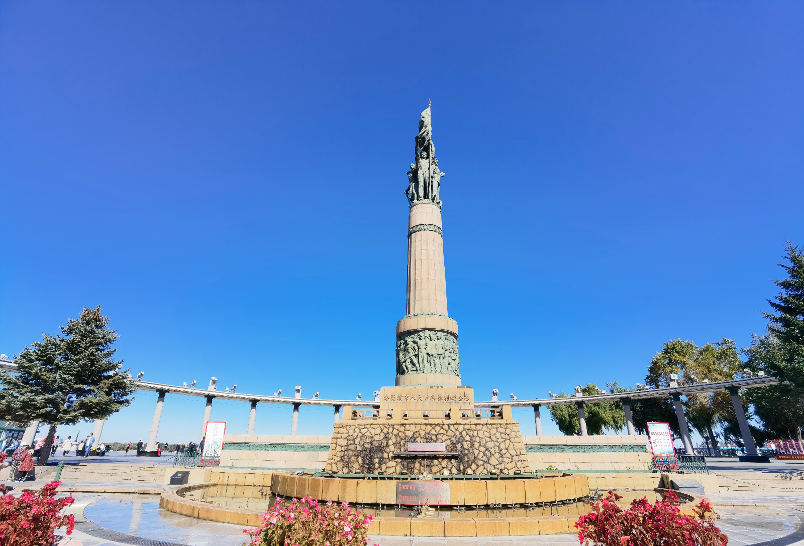

松花江，作为中国东北地区的重要河流之一，发源于长白山天池，流经吉林和黑龙江两省，最终汇入黑龙江，是东北亚地区生态环境的重要组成部分。
松花江流域拥有丰富的自然资源，沿途滋养了广袤的森林、肥沃的土地和多样化的生物种群。此外，沿江两岸的城市如吉林市和哈尔滨市，深受其恩泽，孕育出独特的地域文化和历史遗迹。

哈尔滨松花江畔，防洪纪念塔映衬下的城市风貌
每年冬季，松花江以其独特的气候条件成为冰雪运动和观赏冰灯雪雕的胜地，其中著名的哈尔滨冰雪大世界就坐落在江边。而到了夏季，松花江则展示着它的宁静秀美，是市民休闲娱乐的好去处。